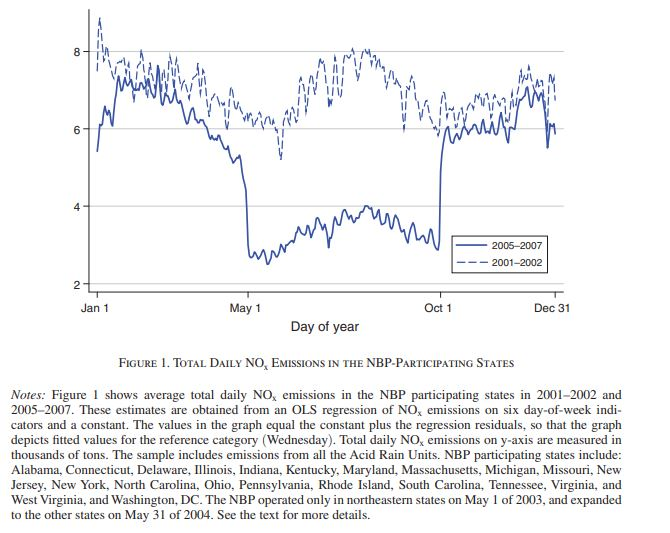
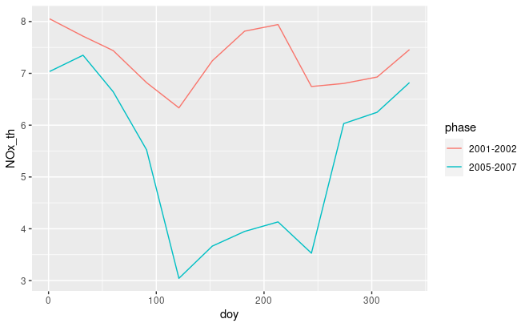

In this assignment, you will use the filter, mutate, group_by, and summarize functions to create Figure 1 in the paper “Defensive Investments and the Demand for Air Quality: Evidence from the NOx Budget Program.”

Part 1: Prepare data and packages
Step 1: Use the library function to declare that you will use the tidyverse package in this session. (1 point)
library("tidyverse")
── Attaching core tidyverse packages ──────────────────────── tidyverse 2.0.0 ──
✔ dplyr 1.1.1 ✔ readr 2.1.4
✔ forcats 1.0.0 ✔ stringr 1.5.0
✔ ggplot2 3.5.0 ✔ tibble 3.2.1
✔ lubridate 1.9.3 ✔ tidyr 1.3.0
✔ purrr 1.0.1
── Conflicts ────────────────────────────────────────── tidyverse_conflicts() ──
✖ dplyr::filter() masks stats::filter()
✖ dplyr::lag() masks stats::lag()
ℹ Use the conflicted package (<http://conflicted.r-lib.org/>) to force all conflicts to become errors
Step 2: The script below uploads data from year 2001 into the RStudio environment. You just need to run it.
df2001<-read.csv("EPA AMPD/emission_2001.csv")
Step 3: Upload data from year 2002, 2005, 2006, and 2007 into the RStudio environment. Combine data from year 2001, 2002, 2005, 2006, and 2007 into one dataframe. Call the new data frame df. (2 points)
This step creates a new column called NOx_emit that replaces __NA_ values in the column _NOx..tons. with _0.
Part 2: Select observations from regulated states
Step 1: In this step, you will identify states that were regulated by the NOx Budget Program. First, you will create a new dataframe called df3 that contains only observations where the column Program.s. is equal to “ARP, NBP”
(1 point)
df3<-df2 %>%filter(Program.s.=="ARP, NBP")
Step 2: The script below creates a vector of unique states in df3. You just have to run it.
nbp_states<-unique(df3$State)
Step 3: The script below keeps only states regulated states in df4. You just have to run it.
df_nbp<-df2 %>%filter(State %in% nbp_states)
Part 3: Prepare data for the plot
Question 1: What is the x-axis in Figure 1? (1 point)
Answer: Day of the year
Question 2: What is the y-axis in Figure 1? Fill in the blank. (1 points)
The average daily total NOx emissions from regulated states
Step 2: Before finding the average daily total NOx emissions, we need to the total monthly NOx emissions. Create a new dataframe called df_nbp2 from df_nbp. Use the group_by and summarize functions to find the total NOx emissions for each month and year. Name the new column NOx_emit. (2 points)
Hint: You learned how to do this in this video in DataCamp.
`summarise()` has grouped output by 'Month'. You can override using the
`.groups` argument.
Step 3: We need to estimate the average daily NOx emissions from monthly NOx emissions data. To do this, we will divide total NOx emissions in months with 31 days by 31, divide NOx emissions in months with 30 days by 30, and divide NOx emissions in February with 28.
Step 3.1: Create a new dataframe called df_nbp3 from df_nbp2. Create a new column called NOx_daily equal to NOx_emit/31 if the month is January, March, May, July, August, October, or December. Otherwise, NOx_daily is equal to NA. (4 points)
Step 3.2: Create a new dataframe called df_nbp4 from df_nbp3. Create a new column called NOx_daily equal to NOx_emit/30 if the month is April, June, September, or November. Otherwise, NOx_daily is equal to NOx_daily. (4 points)
Step 3.2: Create a new dataframe called df_nbp5 from df_nbp4. Create a new column called NOx_daily equal to NOx_emit/28 if the month February. Otherwise, NOx_daily is equal to NOx_daily. (3 points)
Step 5: Use the mutate and ifelse functions to create a new column called phase. This variable will indicate the period before the implementation of the NBP or during the implementation of NBP.
Create a new dataframe called df_nbp7 from df_nbp6. If Year is greater than or equal to 2005, then phase will equal “2005-2007”. Otherwise, phase will equal “2001-2002”. (3 points)
Step 6: Create a new dataframe called df_nbp8 from df_nbp7.Use the group_by and summarize function to find the average value of NOx_daily for each day of the year (represented by the variable doy) and implementation phase (represented by the variable phase). (2 points)
Step 1: Use the ggplot function to create a line graph. The graph should have two lines, each showing the annual average NOx emissions from each state before and after the implementation of the NOx Budget Program. The graph should look like or similar the one below. (4 points)

Hint: You learned how to do this in this video in DataCamp.